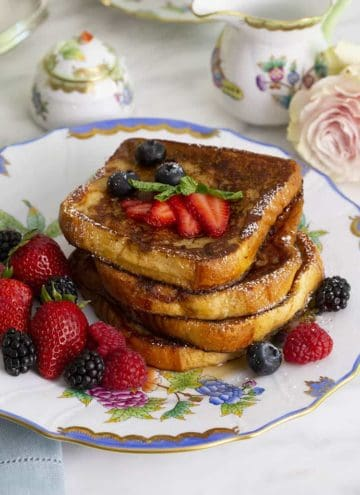

<div class="recent-widget--wrapper" fxLayout="column" fxLayoutGap="5rem">
  <div fxLayout="row" fxLayoutGap="1rem" *ngFor="let imageSrc of [1,2,3,4]">
    <div fxFlex="0 0 40">
      
    </div>
    <div fxFlex="1 1 auto">
      <span>LEMON CURD</span>
      <p class="font-medium">Lemon curd is one of the easiest things to make, it’s a thick spread made from fresh lemons, sugar, eggs, and
        butter. It’s smooth, and creamy in texture with a bright, sweet, and zingy flavor perfect for using in desserts or
        simply spreading on toast for breakfast. Once you make this easy homemade version I…</p>
      <button color="accent" mat-raised-button fxLayoutAlign="center center"> Read On <mat-icon>arrow_right_alt</mat-icon></button>
    </div>
  </div>
</div>

